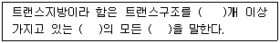
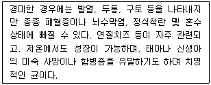
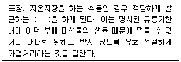

식품산업기사 (2018-08-19 기출문제)
1과목: 식품위생학
1. 식품 위생 검사 시 검체의 채취 및 취급에 관한 주의사항으로 틀린 것은?
- 저온유지를 위해 얼음을 사용할 때 얼음이 검체에 직접 닿게 하여 저온유지 효과를 높인다.
- 식품위생감시원은 검체 채취 시 당해 검체와 함께 검체채취내역서를 첨부하여야 한다.
- 채취된 검체는 오염, 파손, 손상, 해동 변형 등이 되지 않도록 주의하여 검사실로 운반하여야 한다.
- 미생물학적인 검사를 위한 검체를 소분채취할 경우 멸균된 기구 용기 등을 사용하여 무균적으로 행하여야 한다.
(정답률: 93%)

2. 일생에 걸쳐 매일 섭취해도 부작용을 일으키지 않는 1일 섭취 허용량을 나타내는 용어는?
- Acceptable risk
- ADI(Acceptable daily intake)
- Dose-response curve
- GRAS(Generally recognized as safe)
(정답률: 90%)
3. 식품 등의 표시기준에 따른 트랜스지방의 정의에 따라, ( )에 들어갈 용어가 순서대로 옳게 나열된 것은?

- 2, 공액형, 포화지방산
- 1, 공액형, 포화지방산
- 2, 비공액형, 불포화지방산
- 1, 비공액형, 불포화지방산
(정답률: 71%)
4. 식품의 부패를 검사하는 화학적인 방법이 아닌 것은?
- pH 측정
- 휘발성 염기질소 측정
- 트리메틸아민(TMA) 측정
- phosphatase 활성 측정
(정답률: 74%)
5. 소독·살균의 용도로 사용하는 알코올의 일반적인 농도는?
- 100%
- 90%
- 70%
- 50%
(정답률: 89%)
6. 산분해간장 제조 시 생성되는 유해물질은?
- MCPD
- Dioxin
- DHEA
- DEHP
(정답률: 71%)
7. 아래의 특징에 해당하는 식중독 원인균은?

- Vibrio vulnificus
- Listeria monocytogenes
- CI. botulinum
- E. coli O157 : H7
(정답률: 73%)
8. 식품위생법령상 위해평가 과정의 정의가 틀린 것은?
- 위해요소의 인체내 독성을 확인하는 위험성 확인과정
- 위해요소의 식품잔류허용기준을 결정하는 위험성 결정과정
- 위해요소가 인체에 노출된 양을 산출하는 노출평가과정
- 위험성 확인과정, 위험성 결정과정, 노출평가 과정의 결과를 종합하여 해당 식품 등이 건강에 미치는 영향을 판단하는 위해도 결정과정
(정답률: 50%)
9. 식물성 식중독을 일으키는 원인 물질과 식품의 연결이 틀린 것은?
- 시큐톡신(cicutoxin) - 독미나리
- 에르고톡신(ergotoxin) - 면실유
- 무스카린(muscarine) – 버섯
- 솔라닌(solanine) - 감자
(정답률: 86%)
10. 식품 등의 공전을 작성·보급하여야 하는 자는?
- 농림축산식품부장관
- 식품의약품안전처장
- 보건복지부장관
- 농촌진흥청장
(정답률: 88%)
11. 채소를 통하여 감염되는 기생충이 아닌 것은?
- 십이지장충
- 선모충
- 요충
- 회충
(정답률: 80%)
12. 식품의 영양강화를 위하여 첨가하는 식품첨가물은?
- 보존료
- 감미료
- 호료
- 강화제
(정답률: 89%)
13. 유해성 포름알데히드(formaldehye)와 관계 없는 물질은?
- 요소수지
- urotropin
- rongalite
- nitrogen trichloride
(정답률: 56%)
14. 식품첨가물의 사용에 대한 설명으로 옳은 것은?
- 젤라틴의 제조에 사용되는 우내피 등의 원료는 크롬처리 등 경화공정을 거친 것을 사용하여야 한다.
- 식품의 가공과정 중 결함 있는 원재료의 문제점을 은폐하기 위하여는 사용할 수 있다.
- 식품 중에 첨가되는 식품첨가물의 양은, 기술적 효과를 달성할 수 있는 최대량으로 사용하여야 한다.
- 물질명에 ‘「」’를 붙인 것은 품목별 기준 및 규격에 규정한 식품첨가물을 나타낸다.
(정답률: 78%)
15. 도자기제 및 법랑 피복 제품 등에 안료로 사용되어 그 소성온도가 충분하지 않으면 유약과 같이 용출되어 식품위생상 문제가 되는 중금속은?
- Fe
- Sn
- Al
- Pb
(정답률: 86%)
16. 먹는물의 수질 기준에서 허용기준수치가 가장 낮은 것은?
- 불소
- 질산성 질소
- 크롬
- 수은
(정답률: 80%)
17. 식품의 Recall 제도를 가장 잘 설명한 것은?
- 식품의 유통 시 발생한 문제 제품을 자발적으로 회수하여 처리하는 사후관리 제도
- 식품공장의 미생물 관리를 위한 위해분석을 기초로 중요 관리점을 점검하는 제도
- 변질되기 쉬운 신선식품의 전 유통과정을 각 식품에 적합한 저온 조건으로 관리하는 제도
- 식품 등의 규격 및 기준과 같은 최저기준이상의 위생적 품질을 기하는 기술적 조건을 제시하는 제도
(정답률: 88%)
18. 일본에서 발생한 미나마타병의 유래는?
- 공정폐수 오염
- 대기 오염
- 방사능 오염
- 세균 오염
(정답률: 88%)
19. 인수공통감염병이 아닌 것은?
- 파상열
- 탄저
- 야토병
- 콜레라
(정답률: 74%)
20. 히스타민(histamine)을 생성하는 대표적은 균주는?
- Bacillus subtilis
- Bacillus cereus
- Morganella morganii
- Aspergillus oryzae
(정답률: 57%)
2과목: 식품화학
21. 식품의 조지방 정량법은?
- Soxhlet 법
- Kieldahl 법
- Van Slyke 법
- Bertrand 법
(정답률: 66%)
22. 맛의 상호 작용의 예로 틀린 것은?
- 설탕 용액에 소량의 소금을 가하면 단맛이 증가한다.
- 커피에 설탕을 가하면 쓴맛이 억제된다.
- 식염에 유기산을 가하면 짠맛이 감소한다.
- 신 맛이 강한 과일에 설탕을 가하면 신맛이 억제된다.
(정답률: 75%)
23. 고분자화합물인 단백질의 분석과 관련이 없는 실험방법은?
- 원심분리
- 젤 크로마토그래피(gel chromatograghy)
- SDS 젤 전기영동
- 동결건조
(정답률: 75%)
24. 과일의 성숙기 및 보관 중 발생하는 연화(softening)과정에서 가장 많은 변화가 일어나는 물질로, 세포벽이나 세포막 사이에 존재하는 구성물은?
- cellulose
- hemicellulose
- pectin
- lignin
(정답률: 79%)
25. 식품 10g을 회화시켜 얻은 회분의 수용액을 중화하는데 0.1N NaOH 3.0mL가 소요되었다면 이 식품의 상태는?
- 알칼리도 15
- 산도 15
- 알칼리도 30
- 산도 30
(정답률: 53%)
26. Henning의 냄새 프리즘(Smell Prism)에 해당 하지 않은 것은?
- 매운 냄새(spicy)
- 수지 냄새(resinous)
- 썩은 냄새(putrid)
- 메스꺼운 냄새(nauseous)
(정답률: 55%)
27. 맛을 내는 대표적인 성분의 연결이 틀린 것은?
- 감칠맛 - 퀴닌
- 청량감 - 멘톨
- 떫은 맛 - 탄닌
- 매운맛(후추) - 피페린
(정답률: 74%)
28. 전분 입자가 호화현상에 대한 설명이 틀린 것은?
- 생전분에 물을 넣고 가열하였을 때 소화되기 쉬운 α(알파)전분으로 되는 현상이다.
- 온도가 높을수록 호화가 빨리 일어난다.
- 알칼리성 pH에서는 전분입자가 호화가 촉진된다.
- 일반적으로 쌀과 같은 곡류 전분입자가 감자, 고구마 등 서류 전분입자에 비해 호화가 쉽게 일어난다.
(정답률: 67%)
29. 유지의 굴절류은 불포화도가 커질수록 일반적으로 어떻게 변하는가?
- 변화없다.
- 작아진다.
- 커진다.
- 굴절되지 않는다.
(정답률: 67%)
30. 배추김치에서 배추는 녹색이 갈색으로 변하는 이유는 엽록소의 Mg이 어떤 성분으로 치환되었기 때문인가?
- Fe2+
- Cu2+
- H+
- OH-
(정답률: 57%)
31. 산화방지제로 사용되지 않는 것은?
- 아스코르브산(ascorbic acid)
- 세사몰(sesamol)
- 리보플라빈(riboflavin)
- 알파토코페롤(α-tocopherol)
(정답률: 54%)
32. 연유 중에 젓가락을 세워서 회전시켰을 때 연유가 젓가락을 따라 올라가는 현상은?
- 브라운 운동
- 바이센 베르그 효과
- 틴들 현상
- 예사성
(정답률: 78%)
33. 기초대사량을 측정할 때의 조건으로 적합하지 않은 것은?
- 영양상태가 좋을 때 측정할 것
- 완전휴식 상태일 때 측정할 것
- 적당한 식사 직후에 측정할 것
- 실온 20℃정도에서 측정할 것
(정답률: 79%)
34. 비타민 B1(thiamin)에 대한 설명 중 틀린 것은?
- 마늘의 매운맛 성분인 알라신(allicin)과 결합한 알리티아민(allithiamin) 형태가 있다.
- 당질 대사에 관여하므로 탄수화물 섭취량에 비례하여 요구된다.
- 생체내의 산화 환원 효소에 관여하는 조효소를 작용한다.
- 결핍되면 각기병 또는 신경염 증상을 보인다.
(정답률: 45%)
35. 유지를 가열하였을 때 점도가 상승하는 원인은?
- 가수분해반응
- 열분해반응
- 산화반응
- 중합반응
(정답률: 66%)
36. 포도당(glucose)이 환원되어 생성된 당알코올은?
- 솔비톨(sorbitol)
- 만니톨(mannitol)
- 이노시톨(inositol)
- 둘시톨(dilcitol)
(정답률: 70%)
37. 녹말을 가수분해하는 효소로서 α-1,4 결합 뿐 아니라 분지점의 α-1,6 결합도 분해하는 효소는?
- 알파아밀라아제(α-amylase)
- 베타아밀라아제(β-amylase)
- 글루코아밀라아제(lgucoamylase)
- 탈분지아밀라아제(debranching amylase)
(정답률: 55%)
38. 고추의 매운맛 성분은?
- 차비신(chavicine)
- 캡사이신(capsaicin)
- 카테콜(catechol)
- 갈산(gallic acid)
(정답률: 90%)
39. 관능검사에서 신제품이나 품질이 개선된 제품의 특성을 묘사하는 데 참여하며 보통고도의 훈련과 전문성을 겸비한 요원으로 구성된 패널은?
- 차이식별 패널
- 특성묘사 패널
- 기호조사 패널
- 소비자 패널
(정답률: 78%)
40. 다음 중 겔 상태의 식품이 아닌 것은?
- 된장국
- 묵
- 젤리
- 양갱
(정답률: 90%)
3과목: 식품가공학
41. 추출한 유지를 낮은 온도에 저장하면서 굳어 엉긴 고체 지방을 제거하는 공정은?
- 탈산
- 원터리제이션
- 탈취
- 탈색
(정답률: 74%)
42. 축육을 도살하기 전에 조치해야 할 사항으로 틀린 것은?
- 도살전의 급수
- 도살전의 안정
- 도살전의 급식
- 도살전의 위생검사
(정답률: 80%)
43. 유지의 정제 공정이 아닌 것은?
- 불용물질 제거(desludge)
- 탈산(deacidification)
- 탈색(bleaching)
- 산화(oxidation)
(정답률: 76%)
44. 버터의 정의로 옳은 것은?
- 원유, 우유류 등에서 유지방분을 분리한 것 또는 발효시킨 것을 교반하여 연압한 것을 말한다(식염이나 식용색소를 가한 것 포함).
- 식용유지에 식품첨가물을 가하여 가소성, 유화성 등의 가공성을 부여한 고체상의 것을 말한다.
- 원유 또는 우유류에서 분리한 유지방분으로 유지방분 30% 이상의 것을 말한다.
- 유크림에서 수분과 무지우고형분을 제거한 것을 말한다.
(정답률: 70%)
45. 청국장의 끈끈한 점성 물질의 주된 성분은?
- fructan
- glucan
- galactan
- xylan
(정답률: 54%)
46. 쌀의 도정도가 높을수록 상대적으로 증가하는 것은?
- 섬유질
- 단백질
- 소화율
- 비타민류
(정답률: 78%)
47. 비중이 0.95인 액체 18g이 차지하는 부피는 얼마인가? (단, 물의 밀도는 1.0g/cm3이다.)
- 0.95cm3
- 1.⑤cm3
- 1.18cm3
- 18.9cm3
(정답률: 41%)
48. 고형분이 10%인 오렌지주스 100kg을 농축시켜 20%의 고형분이 함유되어 있는 주스로 만들기 위해서는 수분을 얼마나 증발시켜야 되는가?
- 20kg
- 40kg
- 50kg
- 60kg
(정답률: 56%)
49. 잼류의 가공 시 필요한 성분이 아닌 것은?
- 펙틴
- 당
- 유기산
- 단백질
(정답률: 82%)
50. 어패류의 선도판정에 설명이 틀린 것은?
- 관능적 방법은 오감에 의하여 판정하는 방법으로 객관성이 높아 현장에서 많이 이용한다.
- 세균학적 방법은 어패육에 부착한 세균수를 측정하는 방법으로 시료채취 부위에 따라 결과에 오차가 생기기 쉽다.
- 휘발성 염기질소 함량이 5~10mg/100g 인 경우는 신선한 어육으로 볼 수 있다.
- 어육의 pH는 사후에 내려갔다가 선도의 저하와 더불어 다시 상승한다.
(정답률: 58%)
51. 소시지(Sausage)를 제조할 때 원료육에 향신료 및 조미료를 첨가하여 혼합하는 기계는?
- meat chopper
- silent cutter
- stuffer
- packer
(정답률: 45%)
52. 사과 1kg을 20℃ 저장고에 보관했을 때, 1시간동안의 호흡량이 54[CO2·mg/kg/h]이었다. 이 사과를 10℃ 저장고로 옮겼을 때, 1시간 동안의 호흡량은 얼마인가? (단, 이 사과의 온도계수(Q10)는 1.8이다.)
- 12[CO2·mg/kg/h]
- 30[CO2·mg/kg/h]
- 48[CO2·mg/kg/h]
- 50[CO2·mg/kg/h]
(정답률: 53%)
53. 유지 채유과정에서 열처리를 하는 이유가 아닌 것은?
- 유리지방산 생성 촉진
- 원료의 수분 함량 조절
- 산화효소의 불활성화
- 착유 후 미생물의 오염방지
(정답률: 63%)
54. 물엿의 점성에 기여하는 대표적인 물질은?
- 과당
- 덱스트린
- 유당
- 전분
(정답률: 63%)
55. 어패류 선도 판정의 지표물질이 아닌 것은?
- 옥시미오글로빈(oxymyoglobin)
- 인돌(indole)
- 하이포잔틴(hypoxanthine)
- 티리메틸아민(trimethylamine)
(정답률: 57%)
56. 치즈 제조시 발효유를 응고시키기 위하여 첨가하는 것은?
- 카제인
- 염화나트륨
- 레닛
- 스타터
(정답률: 68%)
57. 젖음 세척(wet cleaning)방법이 아닌 것은?
- 분무 세척
- 마찰 세척
- 부유 세척
- 초음파 세척
(정답률: 66%)
58. 고구마 전분 제조 시 석회 처리에 따른 주요 효과가 아닌 것은?
- 수율 증대
- 품질 향상
- 부패 방지
- 이물질 제거
(정답률: 32%)
59. 통조림 용기 중 금속 원형관의 호칭에서 401의 의미는?
- 직경이 401mm 이다.
- 직경이 40.1mm 이다.
- 직경이 4와 1/16 인치이다.
- 직경이 4와 1/12 인치이다.
(정답률: 64%)
60. 마요네즈 제조 시 유화제 역할을 하는 것은?
- 식초산
- 면실유
- 소금
- 레시틴
(정답률: 81%)
4과목: 식품미생물학
61. 맥주를 발효하기 위한 맥아즙 제조 공정의 주목적으로 가장 알맞은 것은?
- 효모의 증식
- 저장성 부여
- 발효
- 당화
(정답률: 58%)
62. 곰팡이의 유성생식 과정이 옳게 나열된 것은?
- 핵융합 → 원형질융합 → 감수분열 → 포자형성
- 원형질융합 → 핵융합 → 감수분열 → 포자형성
- 핵융합 → 감수분열 → 원형질융합 → 포자형성
- 원형질융합 → 감수분열 → 핵융합 → 포자형성
(정답률: 60%)
63. 다음 중 불완전균류가 아닌 것은?
- Aspergillus 속
- Mucor 속
- Botrytis 속
- Penicillium 속
(정답률: 48%)
64. 감귤류의 연부 부패의 원인이 되는 미생물은?
- Acetobacter 속
- Clostridium 속
- Lactobacillus 속
- Penicillium 속
(정답률: 52%)
65. 산막효모의 특징이 아닌 것은?
- 액 표면에 피막을 형성한다.
- 위균사나 진균사를 형성한다.
- 양조 과정 중에 알코올을 생성한다.
- Hansenula 속이 해당된다.
(정답률: 45%)
66. 일반적으로 미생물의 세포 구성 물질 중 수분을 제외하고 가장 많은 함량을 차지하는 것은?
- 핵산
- 단백질
- 지방
- 탄수화물
(정답률: 76%)
67. 다음 중 증류주에 해당하는 것은?
- 맥주
- 포도주
- 일본 청주
- 위스키
(정답률: 63%)
68. 일반적으로 통조림 살균 시에 가장 주의하여야 하는 부패 세균은?
- Pediococcus halophilus
- Bacillus subtilis
- Clostridium sporogaenes
- Streptococcus lactis
(정답률: 79%)
69. 다음 세포벽 구성성분 중 그람 양성균에만 존재하는 것은?
- 인지질(phospholipid)
- 펩티도글리칸(peptidoglycan)
- 지질다당체(lipopolysaccharide)
- 테이코산(teichoic acid)
(정답률: 36%)
70. 계란 전체가 회갈색으로 되고 특히 난황이 검게 되는 흑색 부패(black rots)의 원인균은?
- Torulopsis 속
- Serratia 속
- Proteus 속
- Achromobacter 속
(정답률: 53%)
71. 조상균류와 순정균류의 분류기준은 무엇인가?
- 포자의 유무
- 격벽의 유무
- 균사체의 유무
- 편모의 유무
(정답률: 70%)
72. 치즈표면에 착생하여 치즈의 변색과 불쾌취를 발생시키는 곰팡이가 아닌 것은?
- Geotrichum 속
- Cladosporium 속
- Fusarium 속
- Penicilluim 속
(정답률: 44%)
73. 사람이나 동물의 피부에서 흔히 검출되는 균으로 내열성이 강한 장독소를 생성하는 독소형 식중독균은?
- 리스테리아균
- 살모넬라균
- 장염비브리오균
- 황색포도상구균
(정답률: 73%)
74. gluconic axid를 생산하는 미생물과 거리가 먼 것은?
- Acetobacter gluconicum
- Pseudomonas flourescens
- Penicilluium notaum
- Lactobacillus bulgaricus
(정답률: 44%)
75. 맥주의 하면발효효모로 많이 사용되는 것은?
- Saccharomyces cerevisisa
- Saccharomyces carlsbergaensis
- Saccharomyces coreanus
- Saccharomyces rouxii
(정답률: 54%)
76. 피자기속에 자낭포자 4~8개가 순서대로 나열되고 있고 분생자가 반달모양으로 빵조각 등에 생육하여 연분홍색을 띠므로 붉은빵 곰팡이라고도 하며, 미생물 유전학의 연구로도 많이 사용되는 곰팡이 속은?
- Aspergillus 속
- Eremothecium 속
- Neurospora 속
- Penicillium 속
(정답률: 61%)
77. 일반 효모가 생육이 잘 되는 배지의 pH는?
- 약 1~2
- 약 5~6
- 약 7~8
- 약 9~10
(정답률: 57%)
78. 메주 제조 시 단백질 분해효소 등 가수분해효소를 주로 생산하는 것은?
- Salmonella 속
- Bacillus 속
- Lactobacillus 속
- Saccharomyces 속
(정답률: 60%)
79. 카탈라아제(Catalase) 효소에 대한 설명으로 옳은 것은?
- 탄닌 물질을 분해한다.
- 과산화수소를 분해한다.
- 단백질을 분해한다.
- 펙틴을 분해한다.
(정답률: 48%)
80. 포도당 500g을 초산발효시켜 얻을 수 있는 이론적인 최대 초산량은 약 얼마인가?
- 166.7g
- 333.3g
- 500g
- 652.1g
(정답률: 67%)
5과목: 식품제조공정
81. 방사선 살균에 많이 사용되는 조사선원은?(오류 신고가 접수된 문제입니다. 반드시 정답과 해설을 확인하시기 바랍니다.)
- Co60, Cs137
- Co60, Ir192
- Cs137, Cs134
- Cs134, Ir192
(정답률: 61%)
82. 효소의 정제법에 해당되지 않는 것은?
- 염석 및 투석
- 무기용매 침전
- 흡착
- 이온교환 크로마토그래피
(정답률: 43%)
83. 시료의 추출에 대한 설명으로 옳은 것은?
- 추출용매는 점도가 높은 것을 선택한다.
- 추출은 시료 특서에 관계없이 항상 동일한 용매로만 추출해야 한다.
- 용매는 경제성, 작업성, 안전성을 고려하여 선택한다.
- 입자가 크기는 되도록 크게 하여 용매와의 접촉면이 작아지게 한다.
(정답률: 74%)
84. 열풍이 흐르는 방향과 식품이 이동되는 발향에 따라 병류식과 향류식으로 분류되는 건조기로, 과일이나 채소를 건조하는 데 많이 쓰이며, 건조하는데 비교적 긴 시간이 필요한 식품에 적합한 것은?
- 터널 건조기
- 캐비넷 건조기
- 부상식 건조기
- 기송식 건조기
(정답률: 64%)
85. 과립성형 방법으로 제조되는 제품이 아닌 것은?
- 분말주스
- 이스트
- 커피분말
- 비스킷
(정답률: 80%)
86. 유지의 정제 중 원유에 들어 있는 유리지방산을 제거하는 공정은?
- 탈취
- 탈검
- 탈색
- 탈산
(정답률: 66%)
87. 용액 상태로 녹아 있는 원료를 냉각시켜 단단하게 만든 후 얇은 조각으로 만드는 조립기는?
- 압출 조립기
- 파쇄형 조립기
- 혼합형 조립기
- 플레이크형 조립기
(정답률: 79%)
88. 단위조작 중 기계적 조작이 아닌 것은?
- 정선
- 분쇄
- 혼합
- 추출
(정답률: 44%)
89. 원료가 일정한 속도로 이동 중이거나 교반중일 때 물을 뿌려 세척하는 방법은?
- 침지세척
- 마찰세척
- 분무세척
- 부유세척
(정답률: 81%)
90. 회전속도가 빠른 회전자(rotor)가 있는 충격형 분쇄기로, 조직이 딱딱한 곡류나 섬유질이 많은 건조 채소, 건조 육류 등의 분쇄에 많이 이용되는 것은?
- Disc mill
- Hammer mill
- Ball mill
- Crushing mill
(정답률: 67%)
91. 섞이지 않는 두 액체를 빠른 속도로 교반하여 한 액체를 다른 액체에 균일하게 분산시키는 장치는?
- 니더(kneader)
- 휘퍼(whipper)
- 임펠러(impeller)
- 유화기(emulsificater)
(정답률: 65%)
92. 유지를 추출할 때 효율성 증대를 위한 원료의 전처리 공정으로 가장 거리가 먼 것은?
- 조분쇄
- 압편
- 증열 및 건조
- 살균
(정답률: 62%)
93. 다음 중 에멀션의 형태가 다른 하나는?
- 버터
- 마요네즈
- 생크림
- 우유
(정답률: 67%)
94. 다음 ( )에 들어갈 알맞은 용어는?

- 상업적 살균
- 멸균
- 저온 살균
- 적정 살균
(정답률: 73%)
95. 우유와 같은 액상 식품을 미세한 입자로 분무하여 열풍과 접촉시켜 순간적으로 건조시키는 방법은?
- 천일건조
- 복사건조
- 냉풍건조
- 분무건조
(정답률: 80%)
96. 식품 통조림이 Clostridium botulinum 포자로 오염되어 있다. 이 포자의 D121.1이 0.25분일 때, 이 통조림을 121.1℃에서 가열하여 포자의 수를 12대수 cycle만큼 감소시키는데 걸리는 시간은?
- 0.02분
- 2분
- 3분
- 30분
(정답률: 49%)
97. 다음 중 건식 세척 방법은?
- 담금세척
- 분무세척
- 부유세척
- 체분리세척
(정답률: 79%)
98. 점도가 큰 페이스트상의 식품이나 고형분량이 많아 기계적으로 분무가 어려운 식품을 연속적으로 건조하는 데 사용되는 건조방법은?
- 드럼건조(drum drying)
- 열풍건조(hot air drying)
- 고주파건조(impulse drying)
- 적외선건조(infrared drying)
(정답률: 62%)
99. 살균온도 121℃에 습연살균이 필요한 식품의 pH는?
- pH 2
- pH 3
- pH 4
- pH 5
(정답률: 43%)
100. 식품을 노즐 또는 다이스와 같은 작은 구멍을 통하여 압력으로 밀어내는 성형법으로 제조된 가공 식품으로만 이루어진 것은? (문제 오류로 가답안 발표시 4번으로 발표되었으나 확정답안 발표시 모두 정답처리 되었습니다. 여기서는 가답안인 4번을 누르면 정답 처리 됩니다.)
- 국수, 껌
- 국수, 소시지
- 마카로니, 국수
- 마카로니, 소시지
(정답률: 72%)